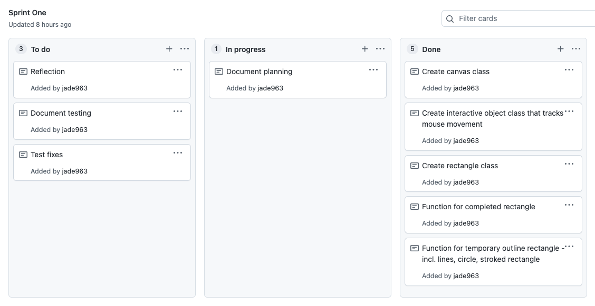
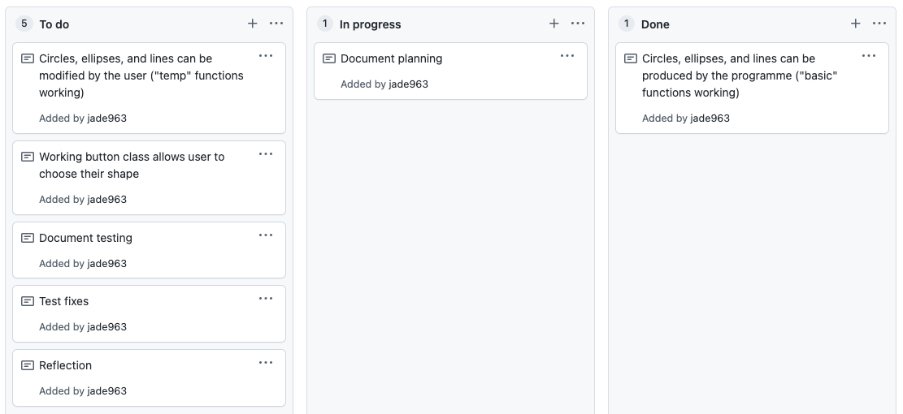
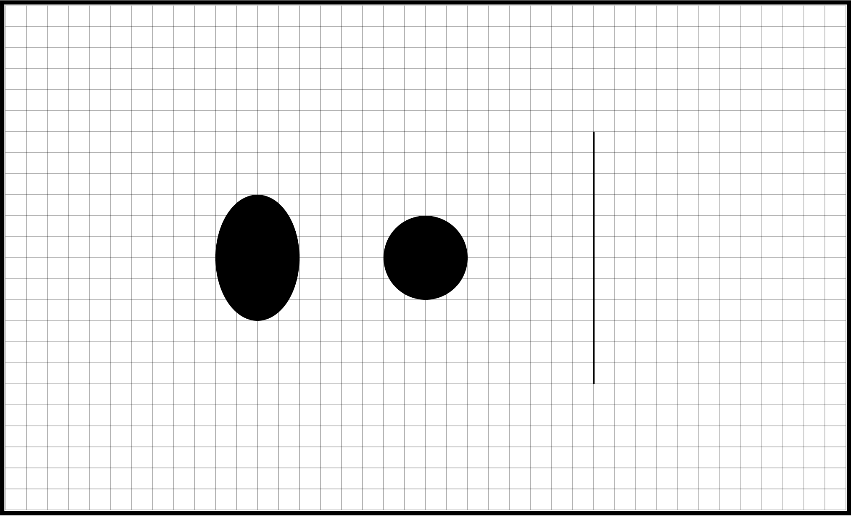

Brief
This project aims to create a basic drawing program after the fashion of Google Draw, for the use of students in schools. The program should allow students to draw customisable shapes and lines. It needs to be based in a canvas environment.
Project Backlog

Sprint One
Aim
By the end of this sprint the program should have a canvas, and the user should be able to click and drag to create a rectangle.
To-do
Planning

Testing
Initial test
This video shows a test of the Sprint One code.
As can be seen, the sprint’s main goal of allowing the user to draw a permanent rectangle on the
canvas has been achieved. However, there are a few bugs.
- The program does not record when the mouse has left the canvas. As a result, if the mouse leaves the canvas while dragging a rectangle, the rectangle disappears. This is confusing and irritating for the user. It seems that it can only be fixed by the addition of strict limits around the drawing area - this is something that will take some consideration and is already planned for a later sprint, so I will leave this bug for now in the interest of prioritising.
-
The “guide” circle in the centre of the temporary rectangle that is shown while the user is
dragging does not resize with the square. While this has no impact on the program’s functionality,
it looks awkward and means that the user is not actually assisted by its presence as intended. I
believe it could be fixed by making the radius responsive to the dimensions of
the rectangle it is contained in, e.g.:
Here, the drawStrokeCircle function (the function for the guide circle) is able to recognise whether the width is less than the height or vice versa, and then make sure its radius stays smaller than it.if(this.h < this.w){ this.r = Math.abs(this.h/10) } else if(this.h > this.w){ this.r = Math.abs(this.w/10) }
Final test
Reflection
As shown in the test above, the fixes applied to bug #2 found in the initial program test have been
successful. Bug #1 has been added to the project backlog to be fixed in a later sprint.
On the
whole
this could be considered a successful sprint. Although the program is still extremely basic, I have a
working canvas and an interactive platform, important fundamentals that will allow me to work on adding
to the program in an efficient way. I have also been able to identify two bugs and fix one of them.
I think the next sprint should give the user more choice
over how they use the program - in its current state, it's pretty boring. To allow the user to choose,
I will have to code buttons and add some very basic shapes to the program's repertoire (e.g. a circle,
line, and ellipse. I already have the code for these as they make up the "guide" shapes, making these
additions quick and easy, allowing me to focus on the more complex code for buttons.)
The buttons are another important fundamental that must work before I can
add any more complicated functions, as this program is intended to be user-oriented and most of the
planned features will simply be providing the user with new options.
Sprint Two
Aim
By the end of this sprint, the user should be able to draw either a rectangle, circle, line or an ellipse using buttons.
To-do
Planning
Testing
Component test #1 - new shapes
This screenshot shows the successful implementation of part one of this sprint - the new shapes, drawn using their "basic" functions.
Component test #2 - drawing new shapes
This video shows an early test of the new shapes added to the program - the ellipse, circle, and line. Although the code is functional, some problems are revealed that interfere with the program's usability.
- Placeholder code has been used at this stage, with the variable "this.choice" deciding
which shape is to be drawn. This will be changed at the next step of this sprint when buttons are
added - since the goal is for the user to be able to make changes without having to change the base
code. because buttons have not yet been added. However, at this stage it is impossible for multiple
shapes to be drawn on the canvas at once, because the page needs to be refreshed each time the
drawing shape is changed.
- It appears that the bug found and fixed in Sprint One, where the guide circle inside the rectangle
did not resize appropriately, was not fixed after all. This is because the code the guide circle uses
to determine whether it should be sized according to the width or the height relied on an equation that
calculated the width/height by subtracting the xMouse or yMouse value from the xStart or yStart
value, then. However, this doesn't work because the user is able to make the width or height
negative by simply dragging the mouse left or up from the Start point. Therefore, if the width is
calculated to be -300, and the height is 30, the computer sees the width as smaller and therefore the
radius resizes to be 1/10 of 300 (30) instead of 1/10 of 30 (3). This problem will require some
consideration and different approaches and there is still a significant amount of work required for this
sprint, so fixing it will be added to the agenda for Sprint Three.
- The final problem is with the guide shapes for the circle. The circle was added so the user had an option of creating the "perfect" shape, as an alternative to the ellipse. However, there is no equivalent "perfect" guide shape (which would be a square) to match it. The rectangle as its guide shape does not resize appropriately to the circle, because the width and the height are different.
Circle - error correction

Final verdict
After solutions 1 and 2 proved unsuccessful, I began planning for solution #3, or the square function. However, during this time I realised that even a successful square or circle would be very restrictive to the user's freedom of movement, because it can only be expanded or contracted along a diagonal centre-line. This is true of squares even in programs such as Google Draw; by nature, the "perfect" shape is restrictive. I have decided, therefore, to scrap both the square and the circle functions. I believe the purpose of these functions can be much more efficiently served by the user simply choosing the rectangle or ellipse option, and if necessary use the grid as a guide to attain their desired proportions. Meanwhile, the user will not have to deal with the irritation of strict limits being placed on their range of movement - something that is rather the antithesis of the theoretical freedom a drawing program should allow.
Component test #3 - buttons
This short video shows the buttons, still without any significant functionality, successfully recognising (changing colour) when the mouse is inBounds and when the button is selected.
Final test
Reflection
As shown in the test above, the goals of this sprint have been met - the program now has a working
button class as well as ellipse and line functions, although the intended circle class was scrapped.
To be fixed in the next sprint is the problem with the guide circle found when a rectangle is
being drawn. The cause has been identified, and the fix will be part of the planning for sprint three.
In terms of general extension of the program, the next steps for this program are to allow the
user the option
not just to choose their shapes, but to choose the characteristics of those shapes - in sprint three,
they should be able to toggle stroke & fill and have some influence over stroke and fill styles.
While reviewing the test, a few possible improvements have occurred to me.
First, there should be
more differentiation between
the "guide shapes" that the user sees while drawing a shape and the temporary outline of the actual
shape - perhaps this could be differentiated by having the guide shapes as dotted lines, and the
temporary version of the final shape as a solid one.
Second, there is currently no stroked edge around a button, and a selected button is indicated by a
transparent fill shade. However, the plan for this sprint is to offer the user with a colour palette
that allows them to choose the colour they want. If the appearance of a selected button is indicated
by changing the colour of the button, this may cause confusion. Therefore, I would like to alter
this functionality in the next sprint by adding a stroke around the buttons whenever the button is
selected, instead - this will align nicely with the main goal of the sprint.
Sprint Three
Aim
By the end of this sprint, the user should be able to toggle stroke & fill for their shapes, & dictate their colour. I also aim to solve a couple of minor glitches held over from the previous sprint.
To-do
Planning
Link to the canvas Page
Testing
Reflections
Sprint Four
Aim
To-do
Planning
Link to the canvas Page
Testing
Reflections
Sprint Five
Aim
To-do
Planning
Link to the canvas Page
Testing
Reflections
Relevant Implications Summary
Example code insert (don't do too much of this)
function inBoundsCheck(xM, yM, x, y, w, h){
if( xM > x && xM < x+w && yM > y && yM < y+h){
return true;
}else{
return false;
}
}
Video Test Example
I hate you WebStorm
Example image placements
For images to be responsive (so that they will rescale to suit the width of the parent, use the .img-responsive class.


I hate you WebStorm, I hate you WebStorm,I hate you WebStorm
I hate you WebStorm, I hate you WebStorm, I hate you WebStorm
Unordered list
Unordered lists are used to markup lists where list items do not require numbering.
- UI hate you WebStorm
- I hate you WebStorm
Ordered list
Ordered lists are used to markup lists where list items require numbering.
- I hate you WebStorm
- I hate you WebStorm
Unstyled list
You can make the list unstyled using the list-unstyled class.
- I hate you WebStorm
- I hate you WebStorm
Inline list
You can make the list display inline using the list-inline class.
- One
- Two
- Three
- Four
Buttons
You can apply the btn class to any element that requires a button style.